WHAT
何为色素沉着？
色素沉着
黑色素异常增多，通常受遗传、内分泌失调，或阳光、紫外线辐射、化妆品、药物及其它物质刺激后，形成黑色的皮肤色素沉积而成。部分可随着角质层脱落，或沉淀于底层并通过血液循环排出体外，而以上功能一旦失调，便形成了色素沉着。
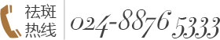
直接连线祛斑专家 →
WHY
选了这么多方法，就是没治好
-
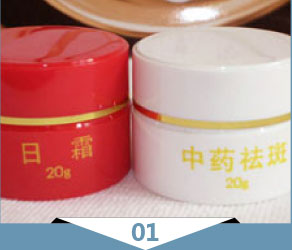
祛斑霜
没有针对斑的种类，且斑点颜色深浅程度不一样，不是一般祛斑霜就可以搞定的，而且，化妆品中铅汞含量严重超标，对人体皮肤带来很严重的伤害甚至致癌。
-
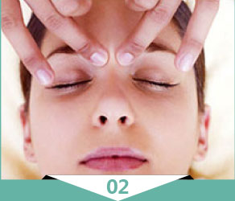
高档美容院
对于皮肤的护理和保养相对专长，如果用来做色素沉着治疗，没有人核心效果。且在某些化妆品加一些辛料、金属酸等化学成分，容易引起斑点颜色加深。
-
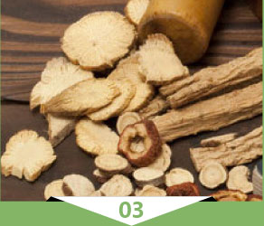
中药
没有针对年龄，不同年龄的肌肤老化程度不一样，药物只能部分解决体内问题，无法解决面部问题，熬制服用麻烦。
-
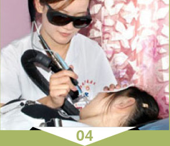
激光祛斑
不分斑专治，且半点患者皮肤修复差，皮肤薄；直接激光刺激，容易伤害皮肤，造成反黑色沉，初期有效果，长期有变风险。
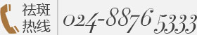
点击咨询东城专家 →
东城祛色素沉着
从内而外治愈
-
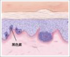
消除色素
-
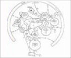
加强代谢
-
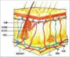
调节肤色
-

稳定祛斑
东城祛色素沉着
从内而外治愈
我们是治病祛斑，不是美容祛斑
-

1、“TA-P 360 防复发医学祛斑体系”是由沈阳东城皮肤病医院资深祛斑专家领衔科研团队倾力研发的祛斑全新疗法。汇聚了生物学、免疫学、医学、美容学等多领域的专家、学者，共同致力于斑的研究和治疗；
- 2、针对身体内部疾病制定精准的诊疗方案；
- 3、首次将色素沉着治疗周期缩短至平时的40%；
东城祛色素沉着
从内而外治愈
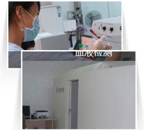
1、对不同年龄层肌肤进行分组检测， 精准分析面部斑点
2、皮肤9项深度检测，不做表面功夫
3、身体12项机能检测，不破损皮肤 肤质，对症治疗。
科学治斑
3大优势阻截色素沉着
 立即咨询专家 →
立即咨询专家 →
案例
本月祛色素沉着之星

倾听他们的长斑故事
- 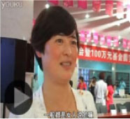
-
网上挂号
-
节省时间
-

避免排队
-
优先就诊
- 就诊姓名： ※必填
- 就诊电话： ※必填
- 就诊时间： ※必填
- 病种类型：